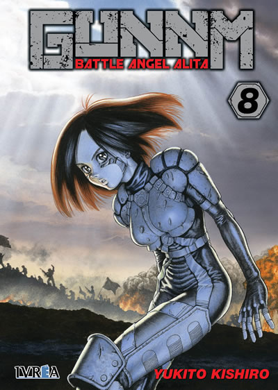

Gally (Alita) toca la armonica en un tejado de la ciudad de Scrapyard con Salem de Fondo.
GUNNM, también conocido por los nombres Hyper Future Vision GUNNM y Battle Angel Alita (en español Alita, ángel de combate), es un manga creado por Yukito Kishiro entre 1991 y 1995 y publicado en la revista Business Jump. En 1993 se realizó la adaptación al anime. A pesar de haberse planteado la adaptación de toda la serie, solo se produjeron dos OVAs (uno por cada uno de los primeros tomos), ya que no se vendieron bien en Japón. En parte fue por la crisis económica asiática y en parte porque los fanes fueron decepcionados por una adaptación que simplificaba excesivamente la intrincada trama del manga.
La serie manga se tituló originalmente Hyper Future Vision GUNNM (kanji: 銃夢, pronunciados "gan-mu", que significan "arma" y "sueño"). Cuando VIZ Media importó el manga a Norteamérica, realizó diversas modificaciones, tales como invertir el sentido de lectura y diversos cambios en la rotulación. El traductor Fred Burke llevó a cabo otras modificaciones más drásticas, principalmente en la adaptación de nombres: desde ese momento Gally será conocida como Alita, Salem será llamada Tiphares (el nombre original es un juego de palabras que surge en conjunto con Jeru, su ciudad hermana: Jeru-Salem/Jerusalén) y finalmente, en todo occidente, el título oficial será Battle Angel Alita.
Cuando la empresa tejana ADV Films adquirió los derechos de distribución de los OVAs decidieron titularlo Battle Angel a fin de que los fanes pudiesen relacionarlo con el manga. Al tratarse de la versión original subtitulada, no hubo más remedio que prescindir de todos los nombres adaptados como Gally. En España fue distribuida en VHS por Manga Films, mientras que en Cataluña fue emitida en El 33 en catalán. Tanto el doblaje en castellano como en catalán lo tradujeron a través del doblaje inglés y no el original japonés. Se sabe que en Hispanoamérica se distribuyó por Quality Films en formato VHS con doblaje hecho en México, en una edición muy rara y difícil de encontrar.
Una serie de problemas nerviosos forzaron a Yukito Kishiro a finalizar prematuramente la serie en el noveno volumen. Pocos años más tarde tuvo la oportunidad de retomar las partes de la historia que omitió por medio de la secuela GUNNM: Last Order, enlazando directamente desde una parte del noveno volumen de Hyper Future Vision GUNNM (Volumen 9, capítulo 4, a partir de la página n°16), rescatando parte de este como punto de partida de GUNNM: Last Order y desechando el resto del noveno volumen. Last Order se encuentra finalizada en Japón con un total de 19 tomos.
GUNNM: Mars Chronicle es el capítulo final de la franquicia de GUNNM, el cual se encuentra en publicación desde 2014 con un total de 7 tomos publicados hasta el momento.
Personajes Principales
Gally
Alita (Gally), personaje principal de la historia.
También conocida como El Ángel de la Muerte o Yoko. Sus restos son encontrados por el cirujano de robots Daisuke Ido en la montaña de escombros arrojados por Salem, la ciudad flotante. En un inicio, Gally desconoce completamente su pasado; pero al descubrir sus habilidades, decide convertirse en cazador guerrero para recordar su pasado a través del Panzer Kunst, su estilo de combate.
Daisuke Ido
Daisuke Ido, medico de Scrapyard y padre adoptivo de Alita.
Un notable científico proveniente de Salem. Vive en Scrapyard ayudando a la gente como cirujano de robots, además de trabajar en las noches como cazador guerrero. Encuentra los restos de Yoko entre los desechos de Salem, construyéndole un cuerpo decide conservarla como hija, nombrándola Gally.
Desty Nova
Desty Nova, Cientifico y principal antagonista de la obra
El principal enemigo de Gally y creador de sus principales oponentes. El enfermo pero brillante científico especializado en nanotecnología, abandonó Salem para experimentar con el karma de cada individuo, y ayudar a conquistarlo. Bajo esta filosofía entregó un cuerpo de gusano a Makaku, potenció el cerebro de Jashugan, resucitó a Zapan y experimentó con su hijo Kaos.
Arcos Argumentales
Hyper Future Vision
Comprende la obra original publicada por Yukito Kishiro entre 1990 y 1995, con un total de 9 volúmenes que abarcan desde el momento en que el Doctor Ido encuentra a Gally, pasando por su etapa como cazador guerrero, competidora del Motorball y agente Tuned, hasta el desenlace tras su aparente muerte tras el enfrentamiento contra Nova en el Granite Inn. Originalmente el último volumen incluía más capítulos donde se exponía un primer desenlace de la historia, pero posteriormente este final fue desechado por el autor para continuar la obra en Last Order.

Portadas de los tomos 1 y 8 del primer arco argumental del manga distribuido por la editorial IVBREA
Tomos distribuidos del arco Hyper Future Vision
Tomo
Título
Lanzamiento en Japón
01
El Angel Oxidado
19 de septiembre de 1991
02
La Doncella de Hierro
19 de febrero de 1992
03
El Angel Asesino
17 de junio de 1992
04
Ars Magna
19 de Mayo de 1993
05
La Oveja perdida
17 de septiembre de 1993
06
El Creador de Lluvia
19 de enero de 1994
07
Panzer Bride
19 de abril de 1994
08
Crónicas de guerra
19 de septiembre de 1994
09
Conquista
19 de julio de 1995
Last Order
Segundo arco argumental del manga publicado entre los años 2000 y 2014, con un total de 19 volúmenes que fue creado por el autor tras desechar el primer desenlace para profundizar y extender la historia. Tras la aparente muerte de Gally al final de Hyper Future Vision, despierta en la ciudad de Salem tras ser reconstruida y perfeccionada por Desti Nova, emprendiendo un viaje fuera del planeta para conocer las civilizaciones del sistema solar y participar en el Zenit Of The Things (ZOTT), el máximo torneo de artes marciales interplanetario, cuyo premio permite al ganador el derecho a fundar una nación con total libertad para escoger las leyes y derechos de su constitución, declarando con ello un desafío hacia los gobernantes corruptos y el orden que imponen.
Portadas de los tomos 1 y 28 del segundo arco argumental del manga distribuido por la editorial PLANETA DE AGOSTINI
Mars Chronicle
Tercer arco argumental del manga, inició su publicación en el año 2014, encontrándose aún en desarrollo con un total de 8 volúmenes hasta el momento. Narra los eventos posteriores al torneo ZOTT, con Gally transformada en un agente de las supercomputadoras Mechizdek y Zeus, a quién sus deberes la llevan de regreso al planeta marte, descubriendo que sus actuales enemigos son sus difuntos camaradas de su época como kunster, quiénes han sido reanimados como muertos vivientes, por lo que la protagonista se impone como misión detenerlos y buscar una forma de liberarlos de esa vida. Este nuevo arco intercala en paralelo a los eventos presentes los sucesos previos al inicio de la historia, revelando finalmente cuál es el verdadero origen de la protagonista, así como su infancia y su época de entrenamiento como guerrera, además de los conflictos bélicos y políticos que propiciaron las guerras de terraformación.
Portadas de los tomos 1 y 2 del tercer arco argumental del manga distribuido por la editorial PLANETA COMIC
Trabajos Relacionados
GUNNM Gaiden, una colección de historias paralelas de GUNNM que se han incluido en la nueva edición española.
Haisha (Ashen Victor), una historia corta ubicada una década antes del comienzo de GUNNM que trata sobre un escándalo que ocurrió en el Motorball.
GUNNM: Last Order, la continuación de Alita, ángel de combate, terminada con un total de 19 volúmenes y traducida en España por Planeta Cómic.
GUNNM: Memories of Mars, un videojuego de rol hecho por Banpresto para la PlayStation.
GUNNM: Mars Chronicle, secuela en publicación de GUNNM: Last Order y final de la franquicia. También publicada en español por Planeta Cómic.
Alita: Battle Angel, adaptación cinematográfica del anime de dos capítulos.
"La vida es una retahila de preguntas, todos, desde el momento que nacemos, vivimos con esas cuestiones en el fondo del corazon, algunos jamas las sacan a relucir... Otros se enfrentan a ellas y tratan de buscar respuestas... y mueren sin encontrarlas, para quien busca respuestas, estas preguntas son una autentica maldicion, pero para quien pasa a la accion, son como un regalo del cielo ¡Por que ningun tirano es capaz de subyugar dicho sentimiento!"
-- Gally
La presente pagina tributo fue realizada en base a la página de Wikipedia de GUNNM y las imágenes extraídas de distintas paginas web.